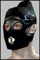

Last Thread Next Thread Last Thread Next Thread  |
| Author | Thread |
| Orinatha Leetas  Registered: Apr 2002 | Patch NTs and MPs Patch up the work on NTs and MPs the two real caster profesions. Heck, patch them into one class. That would make me happy. |
 August 4th, 2002 18:33 August 4th, 2002 18:33 | #1 |
| Alexion Phear Leet Registered: Dec 2001 | Umm I really haven't seen MPs as being a class that much in need since they were fixed. Pet pathng sure but thats not a MP-only issue. And I can't see giving them the best nukes in the game, that'd just be silly. But NTs need some love though. |
| August 5th, 2002 06:03 | #2 |
| Centurion3 Supa Leet  Registered: Aug 2002 | I belive 14.6 - 14.8 was designated for NT's. I think its kinda ironic that you mention MP's and NT's in the same post. The NT's can never use all their own nanos, while MP's can use all of theirs at... what... 140? |
| August 5th, 2002 06:06 | #3 |
| hhj Phear Leet  Registered: May 2002 | That wont be hard to code... They will just take away the pets of MP's becouse they alredy have better buffs and nukes available. /sarcazm off |
| August 5th, 2002 07:15 | #4 |
| Naraya Supa Leet  Registered: May 2002 | quote:If you put Mocham & Enfraam side by side and took a good look at what these two men were capable of, you would laugh your asses off when came time for Enfraam to deliver the goods.... They get Odin's Missing Eye. We get...hmmm......Intelligence Boost :-). Can we at least have Jobe's Yellow Sombraro? You know...the one that summons a yellow sombraro that would give us +50 int and 1000 to all ACs when worn. Can we can we can we? |
| August 5th, 2002 11:36 | #5 |
| Centurion3 Supa Leet Registered: Aug 2002 | my point exactly, I think its rather sad that MP's get better nano cost reduction lines, better nanoprogramming, better nano buffs then an nanotech... I have nothing against the idea of an summoner type class, but christ, they are nukers, buffers, and a pet class... and they're the best at all those things. |
| August 5th, 2002 13:53 | #6 |
| kyleb Supa Leet  Registered: Dec 2001 | MP's definetly don't have the best nuke. I don't think we have the best reduction either, isn't MP's best -22%? |
| August 5th, 2002 14:55 | #7 |
| Centurion3 Supa Leet Registered: Aug 2002 | I do belive that the MP's can use their nukes earlier on in the game then NT's can, therefor get better nukes quickly, true that on higher level this doesnt matter when they can all access all their nukes, but up untill that point. I have no doubt that an MP can out-nuke an NT at almost any time. |
| August 5th, 2002 15:19 | #8 |
| Raiken & Poyy Leet  Registered: Jul 2002 | MP's after obtaining mochams realy have nothing to look forward to aftwerwards. Oh! we get a cacodemon who is inferior to the best meatball pet in terms of damage output. Did i mention pet pating is terrible? atrocious even? well it is! Pets can barely make it through a door when you tell them to attack...AND follow. They only work reasonably out side in open areas....where buildings and tres cannot be found for miles. Heal pets often refuse to heal when you absolutley need them to, plus Belamorte (best heal pet) only heals for like 700 every 8 seconds or so, better than nothing but still could be better itself. As for nukes, the best nuke only hits for like 2k on occasions. Usualy only does 800 or so on orange mobs. Curse of Chronos, a mezz/ root ...sounds kool right? oh whats that? it only lasts for..*GASP* 5 seconds? and thats realy 2 seconds in AO the real world. so its barely enough help to escape from an enemies clutches. Plus it has the added bonus of keeping nano Int. occupied for 10 seconds. On the plus side theres Nano Shutdown. I dont personaly have it yet, but the idea sounds good. I reckon it would be good for PVP but again theres that 10 second wait after using it. Yes we are a pretty self reliant proffession, wich is neat, but after lv 120 or so all MP's usualy face the sad truth that we are basicaly BUFF WH0R3Z! At high lvls we are basicaly soldiers with crappy HP, crappy damage output and no MK sheild. We have one of the koolest nanos in the game...Quantom Wings. Only thing is, it uses Mat MEt of all things. The most unimportant nano skill to raise. Once you have enough money for a yalm and want to start using a gun, you'll end up IPRing Mat Met. Nano Reductions suck (IMO) And the only things miss are Dominate nanos. did i mention our Mezz pet doesnt work whatsoever??? good by mat met. I would like to see more powerful demons, new looking demons, new looking and better working Heal pets, new mezz pets that are efficient. and BETTER PET PATHING!! FC sais theyre working on it but its taking them to long. My MP will be long dead when that day comes. They need to make a /pet teleport now THATS a solution. I have never played an NT before but i have never heard too many complaints on them. Coarse everything in this game has something wrong with it, but i think NT's are pretty good from what i've seen: Calmage Rootage DoT's Warp Good with weapons AND nukes Nullity Sphere Theres probably more that i cant remember but i just woke u so  In any case i agree NT's do deserve more, but i also say FC isnt done on MP's either! |
| August 5th, 2002 15:27 | #9 |
| Zepto Leetas  Registered: Dec 2001 | quote:LMAO!!!!! Just go read ANY forum (except MP) and you will see a general consensious that NT's SUCK!!! |
| August 5th, 2002 15:33 | #10 |
| kyleb Supa Leet Registered: Dec 2001 | MQ never hits for 2k, ever. It can't. Go look at the nano again. |
| August 5th, 2002 15:49 | #11 |
| Doppi Phear Leet  Registered: Apr 2002 | quote:MP's best reduction (Mocham's Neural Interface-Web) is 24%, NT's best (Izgimmer's Obfuscated Recompiler) is 28% ... difference is NT's don't cast their best selfbuffed which leaves them with their second best (Jobe Nano Libraries) which is 22%. As for the nukes, looking purely at damage and disregarding nano-cost and lag there's no doubt MQ does more damage over time than NT's top of the line single target nukes. Avg damage for MQ is 1125.5, 1.82s recharge gives it 618.4 damage/second (on average). Avg damage for RoO is 2293, 3.9s recharge gives it 587.9 damage/second (on average). Avg damage for LDI is 1854.5, 4s recharge gives it 463.6 damage/second (on average). Avg damage for IEF is 2661.5, 4.8s recharge gives it 554.5 damage/second (on average). LDI and IEF are the two arguably best single target nukes NT's have, and I even "assumed" that the NT had enough nano init to make IEF instacast, which usually is NOT the case. At 172 with maxed init and ql200 recomp it still takes me roughly 1 sec to cast IEF, bringing damage/second further down. Uncertain if 'crats have the nano-init to insta-cast RoO, but I know I do so I assume they do as well. Yes I know MQ has a high nano-cost, yes I know it's a taunt (IEF is too, a MASSIVE one), that still doesn't make up for the fact that an MP *can* outnuke an NT on a single target. Everyone knows mobs don't last long enough for you to run out of nano anyways so that's not really a problem. Yes I know RoO isn't selfcastable by 'crats until very high levels (uncertain when), still they can and do outnuke NT's when they use it. Side note: Avg damage for VE is 1025.5, 1.54s recharge gives it 665.9 damage/second (on average). VE is an AoE tho' which means that unless you have a solid doc on the team this can't be used most of the time as there are usually a mob or two in range of it. Anyways comparing AoE nukes to single target isn't the best comparison IMO, but I know someone's gonna so I did it anyway. The one nuke here I really wish I had is RoO, it has a 4sec recharge which gives guns time to fire, and reduces the chances of nukes lost to lag which is the biggest problem with nukes like MQ and VE. ps. for the un-informed: MQ = Mind Quake (best MP nuke) RoO = Rule of One (best 'crat nuke) LDI = Localized Dimensional Inversion IEF = Izgimmer's Enveloping Flame VE = Volcanic Eruption |
| August 5th, 2002 16:39 | #12 |
| hhj Phear Leet Registered: May 2002 | quote:Its not about the big hits (Izg Last Word) but damage over time. Just consider a "decent weapon" wielding MP with his pets and comperable to the NT nukes... So who is the damage dealing / combat class now? |
| August 5th, 2002 16:41 | #13 |
| Necrofiliak Soleet Registered: Jul 2002 | ungimp NTs! we have seen the statistics time and time again. At lvl 70 or so all NTs hit a wall in terms of damage dealt. Having the worst defense in the game and crappy offense makes NTs pure mezzers and HE(humidity extractor) givers at best. give damage back to NTs. i dont understand why mps get so many better buffs. Is there anything at all a NT excels at? Probably mezzing because thats all we can do anyways. Help make them one of the best damage dealing classes like the artilitery(low defense high offense) in the game. NTs are so gimped that comparing them to MPs is not even funny. Raiken try playing a NT and youll see what all the NTs are complaining about. up to lvl 50 or so its fine until u hit the brick wall at lvl 70. i have a lvl 50 mp and she deals more damage damage than my level 73 NT. |
| August 5th, 2002 20:08 | #14 |
| Hamini Supa Leet  Registered: Nov 2001 | quote:MPs are a joke after 150. Pet pathing is so god awful i dont even both to summon pets unless im soloing. Our nuke is great, but it taunts like a mofo because of the -100 nano debuff(which doesnt even effect mobs). nt's are also a joke up to 150. After 150 we are decent damage dealers...but our overall survivability is rediculous. i tried to trade 2 shades of lucubration and an expensive vest for nullity 2...and the guy i was trading with, WOULDNT TAKE THE DEAL. Nts need some love....mps just need pet pathing fixed.. |
| August 5th, 2002 21:10 | #15 |
| kyleb Supa Leet Registered: Dec 2001 | Re: Question? quote:I'm not saying I don't outdamage a NT as a MP but MQ isn't better pvm wise than NT nukes. |
| August 5th, 2002 22:02 | #16 |
| North Supa Leet  Registered: May 2002 | only thing that MPs need is their pathing fixed, they already get all those buffs that would make more sense for NTs to get...fumble reduction, INT/PHY, better nano cost reduction etc... NTs are outdamage by MPs in terms of nukes for most part of the game, while they are out damaged by MPs the whole game. MPs also do most damage overtime with nukes only, Mind Quake, add there that they can protect themselves againt fumbles and you have perfect nuking profession...its not NTs but MPs. NTs don't have any better abilities to wield weapons then MPs, as somebody was stating them being good weapon users. We simply have to use weapons because our damage from nukes is so pathetic atm. I have nothing against MPs, but don't you think they kinda have enough for one profession atm. There is only one thing to say here: MP is well designed profession in overall, probably one of the best one in the game. NT is probably the most neglected profession in overall, now that fixers were fixed. Raiken, why don't you visit our profession forum and then ask yourself...have I ever heard NTs complaining? Last edited by North on August 6th, 2002 at 07:42 |
| August 6th, 2002 07:36 | #17 |
| Hajkster Supa Leet Registered: Mar 2002 | just wanted to say one thing before i go away for abit MP + NT = bad idea to put together!!! |
| August 6th, 2002 07:39 | #18 |
| kyleb Supa Leet Registered: Dec 2001 | MQ is nice but it is not the best DoT! |
| August 6th, 2002 12:05 | #19 |
| The saved copy (Funcom's forum archive, saved by the Wayback Machine in 2025) |
All times are GMT.